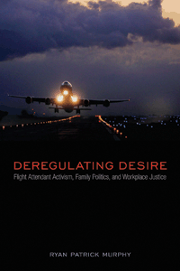

<body bgcolor="#FFFFFF" text="#000000" link="#0000FF" vlink="#CC0000" alink="#CC0000"><center><hr width="350" size="1" align="center" noshade>How flight attendants have drawn on feminist and LGBTQ activist legacies to challenge big business's rise to power after 1970<hr width="350" size="1" align="center" noshade><p><a href="https://cdcshoppingcart.uchicago.edu/Cart/ChicagoBook.aspx?ISBN=&&PRESS=temple" target="_top">Buy this book!</a> | <a href="https://cdcshoppingcart.uchicago.edu/Cart/Cart.aspx?PRESS=temple" target="_top">View Cart</a> | <a href="https://cdcshoppingcart.uchicago.edu/Cart/Cart.aspx?PRESS=temple" target="_top">Check Out</a></p><p></p></center><!--none//--><h1 class = "booktitle">Deregulating Desire</h1> <h1 class = "subtitle">Flight Attendant Activism, Family Politics, and Workplace Justice</h1>
<h3>Ryan Patrick Murphy</h3>
paper: $34.95, Sep 16<BR>EAN:&nbsp;978-1-4399-0989-8<BR><font color=#990033>Available</FONT><font size=-7><br>&nbsp;</font></p><p class="info">cloth: $94.50, Sep 16<BR>EAN:&nbsp;978-1-4399-0988-1<BR><font color=#990033>Available</FONT><font size=-7><br>&nbsp;</font></p><p class="info">e-book: $34.95, Oct 16<BR>EAN:&nbsp;978-1-4399-0990-4<BR><font color=#990033>Not Yet Published Preorder</FONT><font size=-7><br>&nbsp;</font></p></p></td></tr></table>
<BR> <p class="info">252 pp<BR> 6 x 9<BR> <p class="info"><font size=-7>&nbsp;</font></p><p class="info">
</P><BLOCKQUOTE><p>
<i>"</i>Deregulating Desire<i>&nbsp;is a stunning cultural analysis of political economy that explicates both the rise of neoliberal economic policies within the airline industry and flight attendants' creative, activist response. Ryan Patrick&nbsp;Murphy shows us how the ‘family values economy' came to operate and how flight attendants exploited the fissures within it. At this moment of divergent political responses to economic emergency,&nbsp;Murphy's tale is as necessary as it is gripping</i>."-<b>Nan Enstad</b>, Professor of History, University of Wisconsin-Madison, and author of&nbsp;<i>Ladies of Labor, Girls of Adventure: Working Women, Popular Culture, and Labor Politics at the Turn of the Twentieth Century</i>
<br></BLOCKQUOTE>
<p>
In 1975, National Airlines was shut down for 127 days when flight attendants went on strike to protest long hours and low pay. Activists at National and many other U.S. airlines sought to win political power and material resources for people who live beyond the boundary of the traditional family. In<i> Deregulating Desire</i>, Ryan Patrick Murphy, a former flight attendant himself, chronicles the efforts of single women, unmarried parents, lesbians and gay men, as well as same-sex couples to make the airline industry a crucible for social change in the decades after 1970.<br>
<p>Murphy situates the flight attendant union movement in the history of debates about family and work. Each chapter offers an economic and a cultural analysis to show how the workplace has been the primary venue to enact feminist and LGBTQ politics.<br>
<p>From the political economic consequences of activism to the dynamics that facilitated the rise of what Murphy calls the "family values economy" to the Airline Deregulation Act of 1978, <i>Deregulating Desire</i> emphasizes the enduring importance of social justice for flight attendants in the twenty-first century.
<br>
<P CLASS="top"><A HREF="#top">BACK TO TOP</A></P>&nbsp;<h2 class="inpageheading"><A NAME="excerpt"></a>Excerpt</h2><p>
Read the Introduction (pdf).
<br>
<P CLASS="top"><A HREF="#top">BACK TO TOP</A></P>
<BR>&nbsp;
<h2 class="inpageheading"><A NAME="reviews"></a>Reviews</h2>
<p>
"<i>Bravo!&nbsp;Murphy's pioneering study captures the exuberance and courage of post-1960s flight attendants as they struggle for sexual equity and economic justice.&nbsp;By&nbsp;embracing the diverse desires and intimate relations of all workers,&nbsp;Deregulating Desire&nbsp;models a new affective labor history, as attentive to feelings as to economic self-interest</i>."-<b>Dorothy Sue Cobble</b>, Distinguished Professor of History and Labor Studies, Rutgers University, and co-author of <i>Feminism Unfinished: A Short, Surprising History of American Women's Movements</i>
<br>
<p>
"<i>Ryan Patrick Murphy crafts a wholly innovative, interdisciplinary approach to the study of post-1970s trade unionism, placing the history of flight attendant activism alongside that of the women's movement and LGBT politics. Murphy's queer analytic lens smartly demonstrates both how big business interests capitalized on ideals of the normative family and domesticity and how activists challenged these ideas to fight for the rights of not only women and LGBT people but also single people.</i>&nbsp;Deregulating Desire<i> is an important and original contribution</i>."-<b>Christina B. Hanhardt</b>, Associate Professor in the Department of American Studies, University of Maryland-College Park, and author of <i>Safe Space: Gay Neighborhood History and the Politics of Violence</i>
<br>
<P CLASS="top"><A HREF="#top">BACK TO TOP</A></P>&nbsp;<P>
<h2 class="inpageheading"><A NAME="contents"></a>Contents</h2><P><SPAN STYLE="font-family: 'Verdana';font-size: 13px;" >Acknowledgments<BR><BR>Introduction<BR>1. Domesticity and Its Discontents: The Flight Attendant Union Upsurge of the Mid-1970s<BR>2. Night Fever for a New Economy: The Struggle over Time and Money on the Cusp of the 1980s<BR>3. (De)Regulating Desire: Family Values, Pro-work Politics, and the Airline Deregulation Act of 1978<BR>4. Financializing Family Values: Flight Attendants and the Wall Street Revolution of the 1980s<BR>5. United Airlines Is for Lovers: The Politics of Domesticity and Partnership in the 1990s<BR>6. The Expense of Justice: Family Values and the Corporate Mergers and Acquisitions Business in the Twenty-First Century<BR>Epilogue: The Future of the Flight Attendant Union Movement<BR><BR>Methodological Appendix: Researching Contemporary History<BR>Notes<BR>Selected Bibliography<BR>Index</SPAN></P>
<P CLASS="top"><A HREF="#top">BACK TO TOP</A></P>
</P><BR>&nbsp;
<H2 class="inpageheading"><A NAME="author bio"></a>About the Author(s)</H2><p>
<b>Ryan Patrick Murphy</b>-a former San Francisco-based flight attendant for United Airlines and Council Representative for Association of Flight Attendants-CWA Council 11-is Assistant Professor of History and Women's, Gender, and Sexuality Studies at Earlham College in Richmond, Indiana.
<br>
<P CLASS="top"><A HREF="#top">BACK TO TOP</A></P>
<p><h2 class="inpageheading"><A NAME="subjects"></a>Subject Categories</h2><P><A HREF="/tempress/history.html" TARGET="_top">History</a><BR><P><A HREF="/tempress/labor.html" TARGET="_top">Labor Studies and Work</a><BR><P><A HREF="/tempress/sexual.html" TARGET="_top">Sexuality Studies/Sexual Identity</a></P></P>
</p>
<P>
<h2 class="inpageheading">In the Series</h2>�
<p>�<a target="_top" href="http://www.temple.edu/tempress/sexual_studies.html" OnMouseOver="window.status='Click for other books in this series!';return true;"OnMouseOut="window.status=" ><i>Sexuality Studies</i></a></P>
<p><p>
<em>Sexuality Studies</em>, edited by Janice Irvine and Regina Kunzel, features work in sexuality studies broadly construed, in its social, cultural, and political dimensions, and in both historical and contemporary formations. The series includes titles located within disciplinary and interdisciplinary frames that combine theoretical methodologies with empirical research.
<br />
</p></P>
�</P>��
</P>
<p align="center"><a href="https://cdcshoppingcart.uchicago.edu/Cart/ChicagoBook.aspx?ISBN=&&PRESS=temple" target="_top">Buy this book!</a> | <a href="https://cdcshoppingcart.uchicago.edu/Cart/Cart.aspx?PRESS=temple" target="_top">View Cart</a> | <a href="https://cdcshoppingcart.uchicago.edu/Cart/Cart.aspx?PRESS=temple" target="_top">Check Out</a></p><p><font face="Arial" size="1"><a href="copyright.html" onMouseOver="window.status='Web Copyright Policy';return true;" onMouseOut="window.status=''" title="Web Copyright Policy">&copy;</a> 2016 <a href="http://www.temple.edu" target="new" onMouseOver="window.status='Link to Temple University home page';return true;" onMouseOut="window.status=''" title="Link to Temple University home page">Temple University</a>. All Rights Reserved. http://www.temple.edu/tempress/titles/2255_reg.html</font></p>